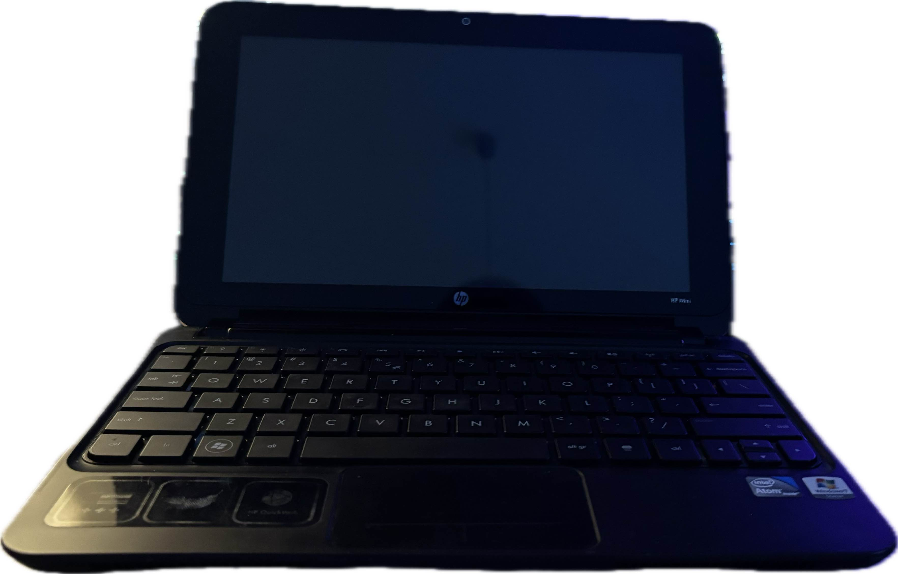
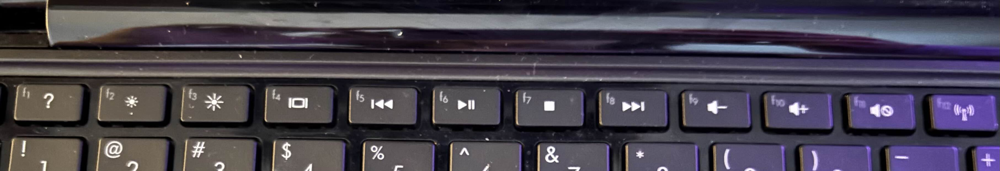

Name : HP Mini 210-1110sw
CPU : Intel Atom Inside (x64) (dont know GHZ)
GPU : Dont Know
RAM : 1Gb
CD/DVD : no
FDD : no
Dial-Up : no
Ethernet : yes
Wifi : yes (may have whitelist)
Functional Battery : yes
Additional Buttons : no
Additional Buttons List : -
Function Buttons : yes
Function Buttons List : F1 - ?, F2 - Brightness Down, F3 - Brightness Up, F4 - Video Output Change, F5 - Backward, F6 - Pause, F7 - Stop, F8 - Forward, F9 - Volume Down, F10 - Volume Up, F11 - Mute, F12 - Wifi On/Off
 